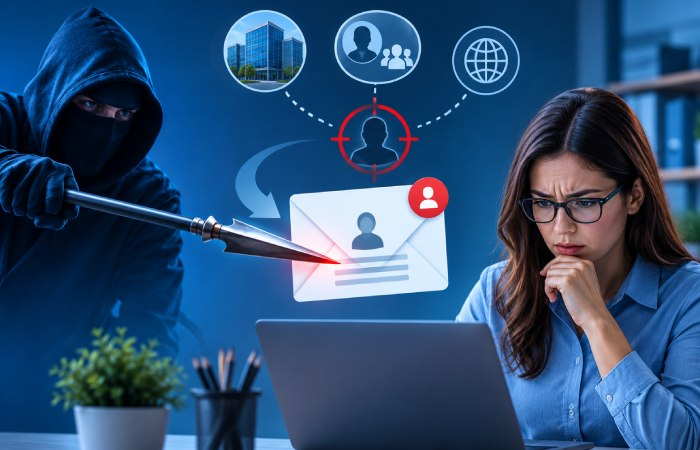
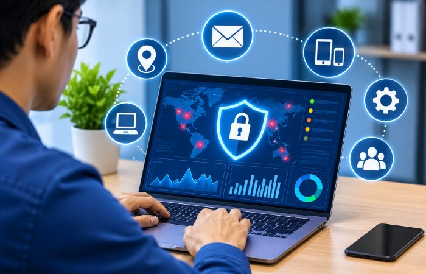

Phishing Prevention Best Practices
To Combat Spear Phishing And
Business Email Compromise
Phishing is one of the most common cybersecurity threats to businesses, employees, and individuals. Cybercriminals use increasingly sophisticated tactics to trick people into revealing sensitive information, transferring money, or granting unauthorized access to company systems. Spear phishing and Business Email Compromise (BEC) are especially dangerous because their messages are targeted and convincing, often impersonating trusted colleagues, executives, suppliers, or business partners. Effective phishing prevention combines employee awareness, email authentication, security technologies, and strong internal procedures to reduce security risks, protect sensitive information, and maintain customer trust.
Understanding Spear Phishing and Business Email Compromise
What Is Spear Phishing?
Spear phishing is a targeted cyberattack that uses personalized messages to deceive specific people or organizations. Attackers may research their targets through company websites, social media, and other publicly available information, then use what they learn to make fraudulent emails seem relevant and legitimate.
For instance, an employee might receive an email that appears to be from their manager, asking for confidential documents or updated login credentials. Familiar names, job titles, and business details can make the request seem trustworthy, even when its authenticity hasn’t been verified.

What Is a Business Email Compromise?
Business email compromise (BEC) is email-based fraud in which attackers pose as executives, employees, vendors, or business partners to influence financial transactions or obtain sensitive information.
- CEO fraud: Impersonating senior executives to request urgent payments or confidential information.
- Invoice fraud: Altering legitimate invoices or supplying fraudulent payment details.
- Account compromise: Accessing business email accounts and using them to deceive contacts.
- Payroll diversion: Posing as employees and requesting changes to salary deposit information.
7 Phishing Prevention Best Practices for Businesses
1. Conduct Regular Employee Security Awareness Training
Employees are often an organization’s first line of defense against phishing. Regular cybersecurity awareness sessions can help staff spot suspicious messages, fraudulent links, unexpected attachments, and unusual payment requests. Practical phishing simulations give employees a chance to recognize realistic scenarios and learn how to respond. Training should also explain how spear phishing and business email compromise (BEC) attacks use trust, urgency, and authority to influence their targets.
2. Implement Email Authentication Protocols
Email authentication helps prevent attackers from impersonating legitimate business domains.
- SPF (Sender Policy Framework): Specifies which mail servers are authorized to send email on behalf of a domain.
- DKIM (DomainKeys Identified Mail): Uses cryptographic signatures to verify that an email’s content has not been altered.
- DMARC (Domain-based Message Authentication, Reporting, and Conformance): Uses SPF and DKIM results to check domain alignment and tell receiving servers how to handle messages that fail authentication.
When configured properly, these protocols help reduce domain spoofing and strengthen email security. Organizations should also review DMARC reports to find unauthorized sending sources and authentication failures.
3. Enable Multi-Factor Authentication
Multi-factor authentication (MFA) adds a layer of protection to business email accounts. If a phishing attack exposes an employee’s password, attackers may still be unable to sign in without completing another verification step. Prioritize phishing-resistant methods such as passkeys and FIDO2 security keys, especially for administrators and employees who handle financial information.
4. Use Advanced Email Security Solutions
Modern email security solutions use spam filtering, threat intelligence, attachment scanning, URL analysis, and behavioral detection to identify suspicious messages before they reach employee inboxes. Organizations should look for solutions that detect impersonation attempts, malicious attachments, suspicious login activity, and unusual communication patterns.
5. Verify Financial Requests Through Separate Channels
Establish strict procedures for verifying payment requests, bank account changes, and transfers of sensitive information. Employees should confirm financial instructions through a previously verified phone number or an approved internal channel—not rely on email alone. Require additional approval for high-value payments to help reduce BEC-related financial losses.
6. Monitor Email Accounts and Network Activity
Continuous monitoring helps organizations spot suspicious activity before attackers can cause significant damage. Watch for unusual login locations, unexpected email-forwarding rules, unfamiliar devices, and abnormal email-sending activity. Regularly review access permissions, disable unused accounts, and investigate unexpected changes to email settings.

7. Establish a Clear Incident Response Plan
Even with strong security controls, phishing attacks can still succeed. Organizations should have an incident response plan that tells employees how to report suspicious emails and suspected account compromises.
- Report suspicious messages promptly to the IT or security team.
- Disable compromised accounts and reset affected credentials.
- Revoke active sessions and review access for unauthorized activity.
- Contact financial institutions if fraudulent transfers occur.
- Investigate the incident and document security improvements.
A clear response plan can help businesses contain threats quickly and limit potential damage. Learn more by visiting this link.